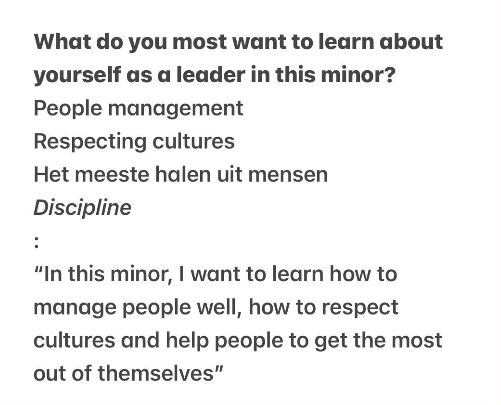
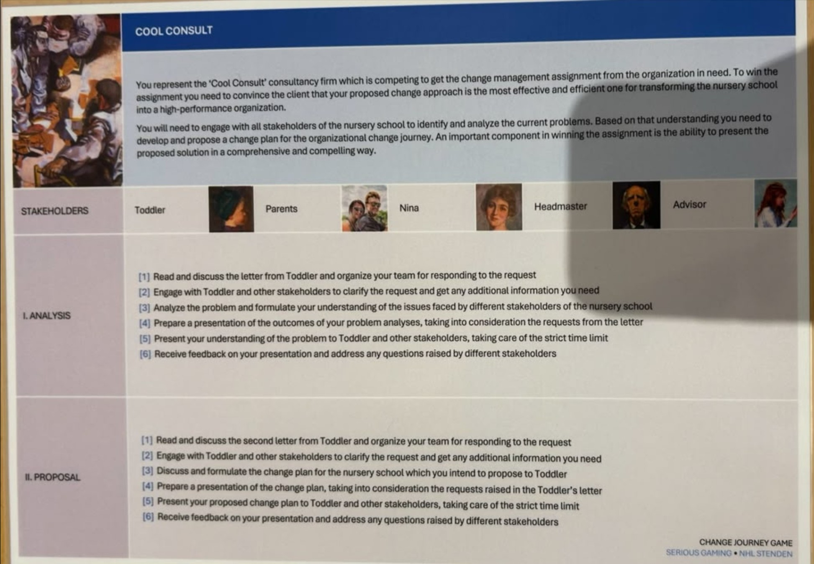
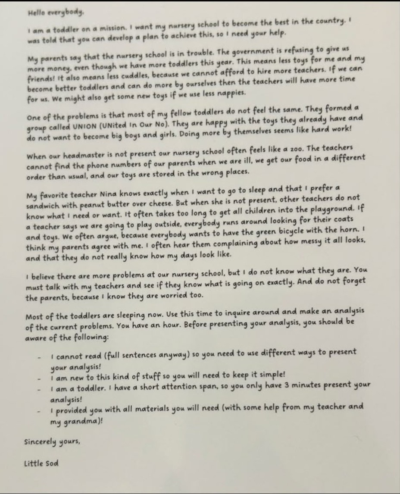
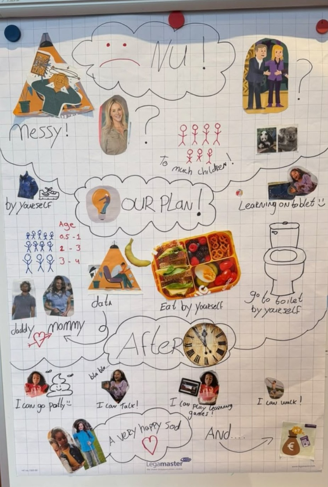
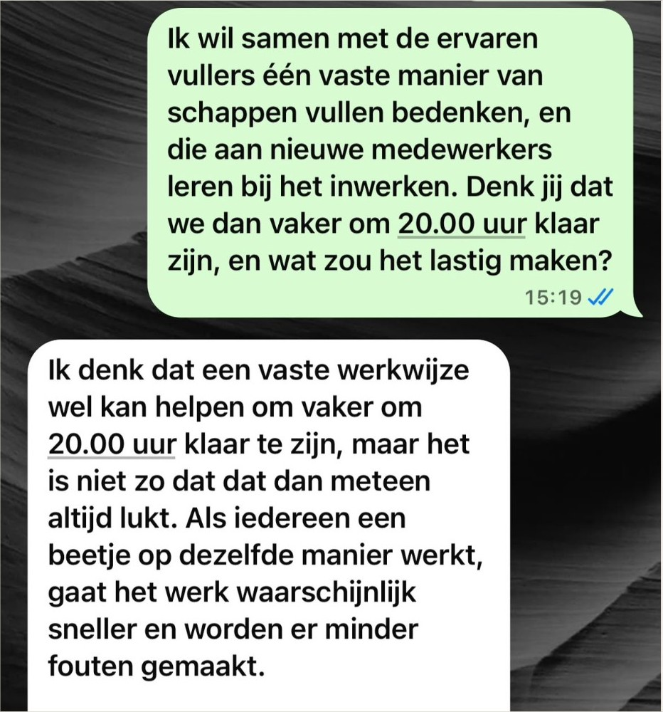
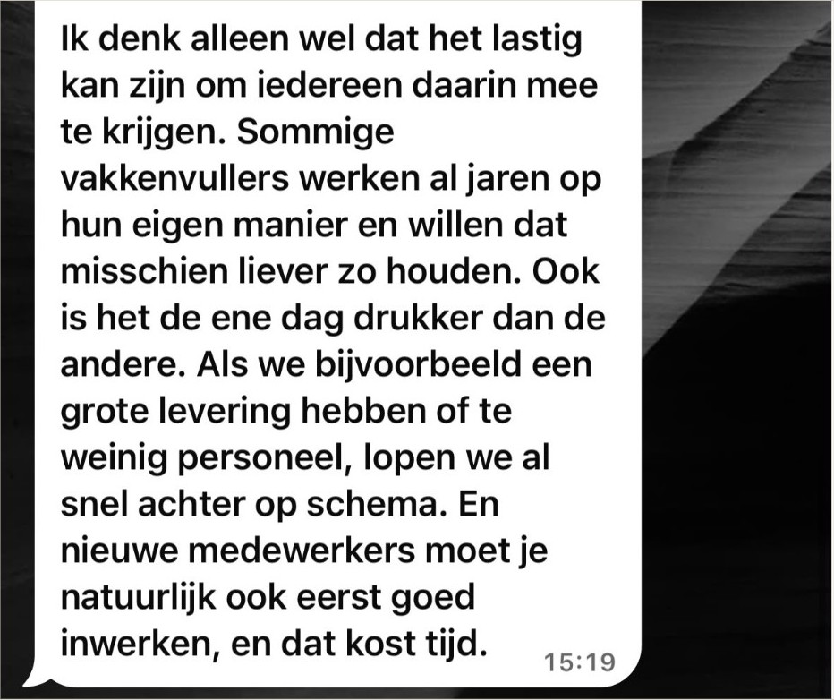

Appendices
Appendix A
Original learning question


Note. Screenshot of my own notes from the first session.
Appendix B
Statement on the use of AI
I used AI as a thinking partner. The AI asked me questions one at a time, and I answered them. The stories, the moments and the choices are mine. The AI wrote the English text based on my answers, and I checked it.
Appendix C
Group reflection Film Night, The Big Short (3.1)
This is the reflection our film night group wrote together. My own part is in 3.1.
For our Film Night, we chose The Big Short (2015), focusing on the character Michael Burry, played by Christian Bale. The film shows the events leading up to the financial crisis of 2007–2008 and follows several people who realise that the American housing market is much less stable than most people believe.
We found Michael Burry particularly interesting to discuss because his leadership style is quite different from what we normally imagine when we think of a leader. He is intelligent, independent and very confident in his own analysis, but he is not particularly social or collaborative. This made it difficult for us to immediately decide whether he represents previous-generation or next-generation leadership.
Our understanding of previous- and next-generation leadership.
Before discussing Burry, we realised that we first needed to agree on what we actually meant by previous-generation and next-generation leadership. At first, we associated previous-generation leadership mainly with hierarchy, authority and a leader making decisions independently. We saw this as a more traditional model in which the leader has the knowledge or position and others are expected to follow. We saw next-generation leadership as more focused on collaboration, empathy, reflection and involving other people in decision-making. In this model, leadership is less about having all the answers yourself and more about bringing people together and creating shared ownership. However, during our discussion we realised that the difference is not simply between “bad old leadership” and “good new leadership”. Some qualities of traditional leadership can still be valuable. For example, a leader sometimes needs to make a difficult decision and stand behind it, even when other people disagree. This became especially clear when we discussed Michael Burry.
Our discussion about Michael Burry.
Our group had different opinions about Burry’s leadership. Some of us initially saw him as a typical previous-generation leader. He makes decisions largely by himself, trusts his own expertise and does not seem very interested in getting everyone involved. He can also be difficult to communicate with and does not seem to prioritise relationships with his colleagues. Others in the group viewed him differently. We argued that Burry also demonstrates qualities that we associate with next-generation leadership. He questions the established system instead of simply accepting what everyone else believes. He looks for the truth himself and is willing to challenge a very powerful industry. The most interesting part of our discussion was whether a leader can be considered a good leader if they are not collaborative. Some of us believed that collaboration is essential because leadership should involve other people. If a leader only trusts their own judgement, they can easily become isolated and miss important perspectives. Others argued that Burry’s independence is exactly what makes him successful. If he had simply followed the opinions of his colleagues or the financial industry, he would never have discovered what was happening in the housing market. In the end, we agreed that both perspectives were valid. Burry shows us that leadership is not one-dimensional. Someone can have very strong leadership qualities while also having weaknesses in other areas.
Our ranking of the five NGL qualities.
After discussing the film, we ranked the five Next Gen Leadership qualities from strongest to weakest: 1. Confident, 2. Reflective, 3. Articulate, 4. Engaging, 5. Collaborative. We placed Confident first because this is probably Burry’s most obvious quality. He is willing to stand behind his analysis even when almost everyone around him thinks he is wrong. He continues to believe in his position despite pressure from his investors and colleagues. We placed Reflective second because Burry does not simply accept what other people tell him. He investigates the mortgage market himself and questions the assumptions that everyone else seems to accept. His ability to think independently is one of the main reasons he is able to predict the crisis. We ranked Articulate third. Burry clearly understands his own argument and is able to explain his reasoning, but he is not always good at communicating with people on an emotional or personal level. We placed Engaging fourth. He is not particularly charismatic and does not seem to motivate people through empathy or emotional connection. People follow his decisions mainly because of his expertise and conviction. Finally, we placed Collaborative last. Burry is extremely independent and often makes decisions based on his own analysis. He does not appear to need much input from others. While this independence is one of his strengths, it also limits his ability to create shared ownership.
The scene we chose.
The scene we found most relevant was when Burry is analysing the mortgage data and starts to realise that the housing market is built on much riskier mortgages than people understand. We chose this because it clearly shows his Reflective quality. Instead of accepting the general belief that the housing market is safe, Burry looks deeper into the numbers. He notices patterns that other people have overlooked and starts questioning the assumptions behind the entire system. What stood out to us was that he was not looking for information that confirmed what everyone already believed. He was willing to reach a conclusion that was completely different from the general opinion. The scene also connects strongly to his confidence. Once he believes his analysis is correct, he is willing to act on it, even though doing so puts his reputation and his investors’ money at risk.
What we learned from the film.
One of our biggest takeaways was that being a strong individual does not automatically make someone a complete leader. Michael Burry is extremely confident and intellectually independent. He sees something that most other people fail to see. Without those qualities, he probably would not have recognised the coming financial crisis. At the same time, the film made us realise the limitations of his leadership style. He does not naturally bring people together, and he does not always communicate in a way that makes others feel included. This made us rethink what next-generation leadership actually means. We initially thought that being independent and challenging the status quo was enough to make someone a next-generation leader. After our discussion, we think it is more complicated. For us, next-generation leadership combines having the courage to think differently with the ability to involve and connect with other people. Burry has the first part very strongly, but he struggles with the second. Overall, we therefore see Michael Burry as a mixture of previous- and next-generation leadership. His way of working is individualistic and traditional in some ways, but his willingness to question established systems and challenge the majority makes him progressive in others. The film ultimately showed us that leadership is not just about being the person who is right. It is also about how you communicate your ideas, how you involve other people and how you respond when people disagree with you.
Appendix D
Change Journey materials (1.4)






Note. Own photos.
Appendix E
Chat with the store manager (3.2)




Note. Screenshots of my own chat, 28 October 2026. His name is left out.